CellChat
heinin
2025-05-05
Last updated: 2025-09-06
Checks: 5 2
Knit directory: SPP1_mouse_scRNAseq/
This reproducible R Markdown analysis was created with workflowr (version 1.7.1). The Checks tab describes the reproducibility checks that were applied when the results were created. The Past versions tab lists the development history.
The R Markdown file has unstaged changes. To know which version of
the R Markdown file created these results, you’ll want to first commit
it to the Git repo. If you’re still working on the analysis, you can
ignore this warning. When you’re finished, you can run
wflow_publish to commit the R Markdown file and build the
HTML.
Great job! The global environment was empty. Objects defined in the global environment can affect the analysis in your R Markdown file in unknown ways. For reproduciblity it’s best to always run the code in an empty environment.
The command set.seed(20250102) was run prior to running
the code in the R Markdown file. Setting a seed ensures that any results
that rely on randomness, e.g. subsampling or permutations, are
reproducible.
Great job! Recording the operating system, R version, and package versions is critical for reproducibility.
Nice! There were no cached chunks for this analysis, so you can be confident that you successfully produced the results during this run.
Using absolute paths to the files within your workflowr project makes it difficult for you and others to run your code on a different machine. Change the absolute path(s) below to the suggested relative path(s) to make your code more reproducible.
| absolute | relative |
|---|---|
| /home/hnatri/SPP1_mouse_scRNAseq/ | . |
| /home/hnatri/SPP1_mouse_scRNAseq/code/CART_plot_functions.R | code/CART_plot_functions.R |
| /home/hnatri/SPP1_mouse_scRNAseq/code/colors_themes.R | code/colors_themes.R |
| /home/hnatri/SPP1_mouse_scRNAseq/CARSPP1_vs_CAR_CellChat_LR_all_res.tsv | CARSPP1_vs_CAR_CellChat_LR_all_res.tsv |
Great! You are using Git for version control. Tracking code development and connecting the code version to the results is critical for reproducibility.
The results in this page were generated with repository version 593cd45. See the Past versions tab to see a history of the changes made to the R Markdown and HTML files.
Note that you need to be careful to ensure that all relevant files for
the analysis have been committed to Git prior to generating the results
(you can use wflow_publish or
wflow_git_commit). workflowr only checks the R Markdown
file, but you know if there are other scripts or data files that it
depends on. Below is the status of the Git repository when the results
were generated:
Ignored files:
Ignored: .RData
Untracked files:
Untracked: CARSPP1_vs_CAR_CellChat_LR_all_res.tsv
Untracked: code/slurm.24960666.err
Untracked: code/slurm.24960666.out
Unstaged changes:
Modified: Rplots.pdf
Modified: analysis/CellChat.Rmd
Modified: analysis/analyze_compartments.Rmd
Modified: analysis/comparative_analysis.Rmd
Modified: code/CellChat.R
Modified: code/CellChat.Rout
Note that any generated files, e.g. HTML, png, CSS, etc., are not included in this status report because it is ok for generated content to have uncommitted changes.
These are the previous versions of the repository in which changes were
made to the R Markdown (analysis/CellChat.Rmd) and HTML
(docs/CellChat.html) files. If you’ve configured a remote
Git repository (see ?wflow_git_remote), click on the
hyperlinks in the table below to view the files as they were in that
past version.
| File | Version | Author | Date | Message |
|---|---|---|---|---|
| Rmd | 593cd45 | heinin | 2025-09-05 | Updated cell type annotations in the CellChat analysis |
| html | 593cd45 | heinin | 2025-09-05 | Updated cell type annotations in the CellChat analysis |
| Rmd | 45ec98c | heinin | 2025-08-28 | CD4 cells vs. others CellChat |
| html | 45ec98c | heinin | 2025-08-28 | CD4 cells vs. others CellChat |
| Rmd | f226445 | heinin | 2025-07-14 | Added lymphoid marker expression |
Introduction
Ligand-receptor analysis using CellChat. The comparison is NEO vs. ADJ after CAR+anti-PD1 therapy.
Packages and environment variables
suppressPackageStartupMessages({
library(Seurat)
library(SeuratObject)
library(SeuratDisk)
library(tidyverse)
library(tibble)
library(ggplot2)
library(ggpubr)
library(workflowr)
library(googlesheets4)
library(CellChat)})
setwd("/home/hnatri/SPP1_mouse_scRNAseq/")
set.seed(1234)
options(future.globals.maxSize = 30000 * 1024^2)
reduction <- "umap"
source("/home/hnatri/SPP1_mouse_scRNAseq/code/CART_plot_functions.R")
source("/home/hnatri/SPP1_mouse_scRNAseq/code/colors_themes.R")Run CellChat
CellChat was run for Day 16 only using code/CellChat.R.
Inspecting results
Import data
seurat_object <- readRDS("/tgen_labs/banovich/BCTCSF/SPP1_mouse_scRNAseq/scRNAseq_Seurat_dim8_granular_annot.rds")
#CC_objects_compare <- readRDS("/tgen_labs/banovich/BCTCSF/SPP1_mouse_scRNAseq/CART_SPP1_Kluc_Cellchat_compare.rsd")
#CC_merged_object <- readRDS("/tgen_labs/banovich/BCTCSF/SPP1_mouse_scRNAseq/CART_SPP1_Kluc_Cellchat_merged.rds")
CC_objects_compare <- readRDS("/scratch/hnatri/CART/CART_SPP1_Kluc_Cellchat_compare.rsd")
CC_merged_object <- readRDS("/scratch/hnatri/CART/CART_SPP1_Kluc_Cellchat_merged.rds")
# Sorting levels for plotting
#celltypes <- c(sort(c(grep("^M", unique(seurat_object$annot), value = T), c("Neut1"))),
# sort(grep("^L", unique(seurat_object$annot), value = T)), c("NK", "Treg", "B1", "ILC", "DC"))
# annot_granular
celltypes <- sort(unique(seurat_object$annot_granular))
seurat_object$celltype <- seurat_object$annot_granular
seurat_object$celltype <- factor(seurat_object$celltype,
levels = celltypes)
CC_objects_compare[[1]]@meta$celltype <- factor(CC_objects_compare[[1]]@meta$celltype,
levels = celltypes)
CC_objects_compare[[1]]@idents <- factor(CC_objects_compare[[1]]@idents,
levels = celltypes)
CC_objects_compare[[2]]@meta$celltype <- factor(CC_objects_compare[[2]]@meta$celltype,
levels = celltypes)
CC_objects_compare[[2]]@idents <- factor(CC_objects_compare[[2]]@idents,
levels = celltypes)UMAP of celltypes
DimPlot(seurat_object,
group.by = "annot_granular",
#cols = carspp1_celltype_col,
reduction = "integratedSCTumap",
label = T,
label.box = T,
label.size = 3,
repel = T,
raster = T,
raster.dpi = c(1024, 1024),
pt.size = 3) +
ggtitle("") +
theme_classic() +
NoLegend() +
NoAxes() +
coord_fixed(1)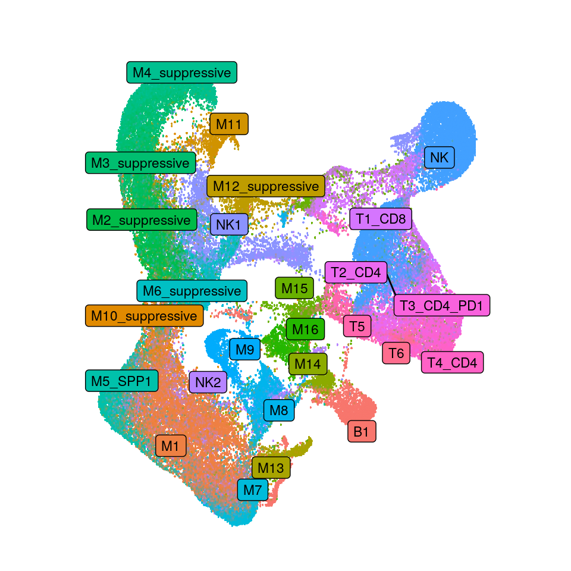
# Compare the total number of interactions and interaction strength
gg1 <- compareInteractions(CC_merged_object, show.legend = F, group = c(1,2))
gg2 <- compareInteractions(CC_merged_object, show.legend = F, group = c(1,2),
measure = "weight")
gg1 + gg2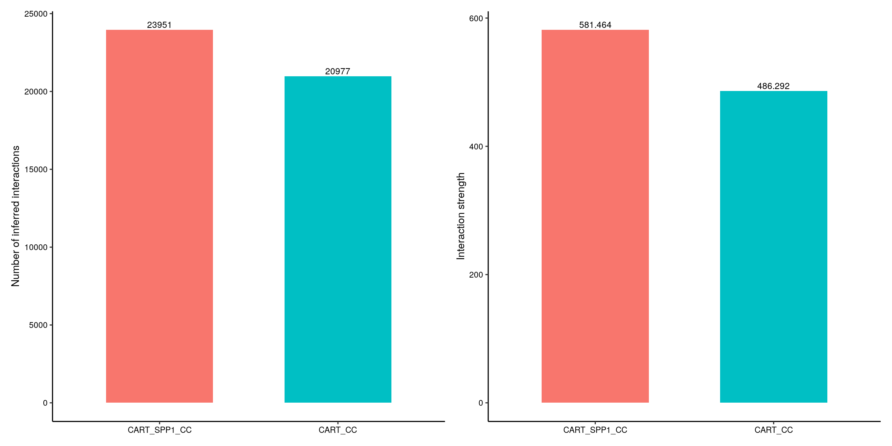
# Differential number of interactions or interaction strength among different cell populations
par(mfrow = c(1,2), xpd=TRUE)
netVisual_diffInteraction(CC_merged_object, weight.scale = T)
netVisual_diffInteraction(CC_merged_object, weight.scale = T,
measure = "weight")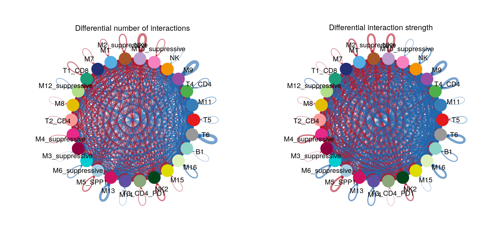
# Heatmaps
gg1 <- netVisual_heatmap(CC_merged_object,
cluster.rows = T,
cluster.cols = T)
gg2 <- netVisual_heatmap(CC_merged_object,
measure = "weight",
cluster.rows = T,
cluster.cols = T)
gg1 + gg2
| Version | Author | Date |
|---|---|---|
| 593cd45 | heinin | 2025-09-05 |
# To better control the node size and edge weights of the inferred networks
# across different datasets, we compute the maximum number of cells per cell
# group and the maximum number of interactions (or interaction weights) across all datasets.
weight.max <- getMaxWeight(CC_objects_compare, attribute = c("idents","count"))
par(mfrow = c(1,2), xpd=TRUE)
for (i in 1:length(CC_objects_compare)) {
netVisual_circle(CC_objects_compare[[i]]@net$count,
weight.scale = T,
label.edge= F,
edge.weight.max = weight.max[2],
edge.width.max = 12,
title.name = paste0("Number of interactions - ", names(CC_objects_compare)[i]),
color.use = carspp1_celltype_col)
}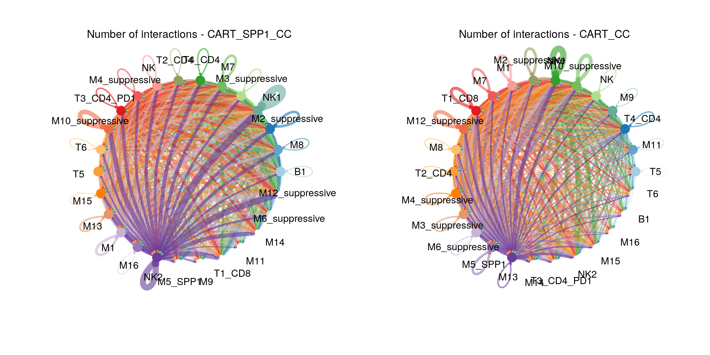
| Version | Author | Date |
|---|---|---|
| 593cd45 | heinin | 2025-09-05 |
# Need to run netAnalysis_computeCentrality before netAnalysis_signalingRole_scatter
# Compute the network centrality scores
CC_objects_compare <- lapply(CC_objects_compare, function(xx){
netAnalysis_computeCentrality(xx, slot.name = "netP") # the slot 'netP' means the inferred intercellular communication network of signaling pathways
})
# Visualize the computed centrality scores using heatmap, allowing ready identification of major signaling roles of cell groups
#netAnalysis_signalingRole_network(CC_objects_compare[[1]], signaling = pathways.show, width = 8, height = 2.5, font.size = 10)# Compare the major sources and targets in 2D space
num.link <- sapply(CC_objects_compare, function(x) {rowSums(x@net$count) + colSums(x@net$count)-diag(x@net$count)})
weight.MinMax <- c(min(num.link), max(num.link)) # control the dot size in the different datasets
gg <- list()
for (i in 1:length(CC_objects_compare)) {
gg[[i]] <- netAnalysis_signalingRole_scatter(CC_objects_compare[[i]],
title = names(CC_objects_compare)[i],
weight.MinMax = weight.MinMax,
color.use = carspp1_celltype_col)
}
patchwork::wrap_plots(plots = gg)Identify and visualize the conserved and context-specific signaling pathways
# Identify and visualize the conserved and context-specific signaling pathways:
# signaling pathways, (i) turn off, (ii) decrease, (iii) turn on or (iv)
# increase, by change their information flow at one condition as compared to
# another condition.
# The top signaling pathways colored red are enriched in NEO, and these colored green were enriched in ADJ
# NEO vs. ADJ
# Extracting data from the plot
ranknet_res <- rankNet(CC_merged_object,
mode = "comparison",
stacked = F,
do.stat = T,
cutoff.pvalue = 0.01,
#tol = 1,
thresh = 0.01)
ranknet_res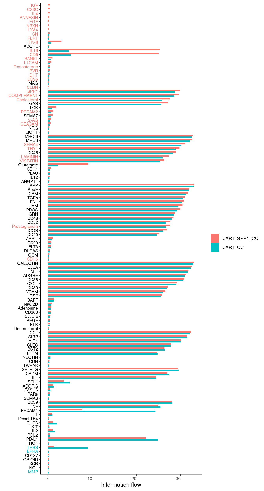
ranknet_data <- ggplot_build(ranknet_res)
info_flow_data <- ranknet_data$plot$data
# Constructing the plot
info_flow_data$log2_contribution_1 <- log2(info_flow_data$contribution+1)
info_flow_data$group <- ifelse(info_flow_data$group == "CART_SPP1_CC", "CART_SPP1", "CART")
barplot_colors <- c("CART" = "deeppink3", "CART_SPP1_CC" = "aquamarine4")
hist(info_flow_data$contribution, breaks = 55, main = "", xlab = "Information flow")
abline(v=1, col = "red")
hist(info_flow_data$contribution, breaks = 20)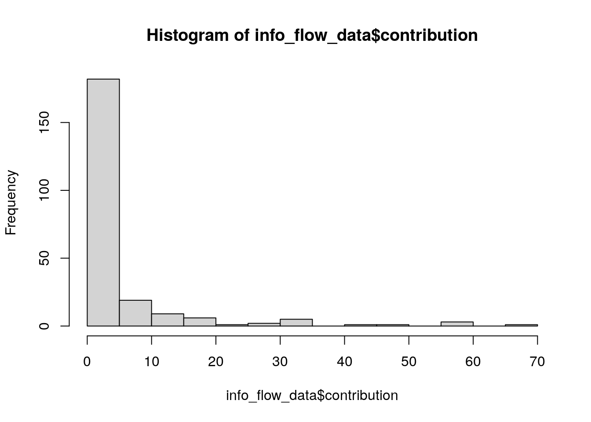
# Plotting delta
barplot_colors <- c("aquamarine4", "deeppink3")
delta_plot <- info_flow_data %>%
dplyr::group_by(name) %>%
dplyr::filter(any(contribution>1)) %>%
ungroup() %>%
dplyr::group_by(group) %>%
dplyr::filter(any(pvalues<0.01)) %>%
ungroup() %>%
dplyr::select(name, contribution, group) %>%
tidyr::pivot_wider(names_from = "group", values_from = "contribution") %>%
mutate(delta = CART-CART_SPP1) %>%
dplyr::select(name, delta) %>%
#filter(abs(delta)>0.00002) %>%
#mutate(log2_delta = log2(delta)) %>%
mutate(sign = delta > 0) %>%
ggplot(aes(x = reorder(name, -delta), y = delta, fill = sign)) +
geom_bar(position = "dodge", stat="identity") +
scale_fill_manual(values = barplot_colors, labels=c("CAR T + anti-SPP1", "CAR T")) +
theme_bw() +
xlab("") +
ylab(expression(Delta ~ "information flow")) +
labs(fill = "Treatment") +
theme(axis.text.x = element_text(angle = 45, vjust = 0.9, hjust=0.9))
delta_plot
# Identify signaling changes associated with one cell group
# Visualizing differential outgoing and incoming signaling changes
# Visually compare cell-cell communication using Hierarchy plot, Circle plot or Chord diagram
pathways.show <- c("SPP1")
weight.max <- getMaxWeight(CC_objects_compare, slot.name = c("netP"), attribute = pathways.show) # control the edge weights across different datasets
par(mfrow = c(1,2), xpd=TRUE)
for (i in 1:length(CC_objects_compare)) {
netVisual_aggregate(CC_objects_compare[[i]], signaling = pathways.show, layout = "circle", edge.weight.max = weight.max[1], edge.width.max = 10, signaling.name = paste(pathways.show, names(CC_objects_compare)[i]))
}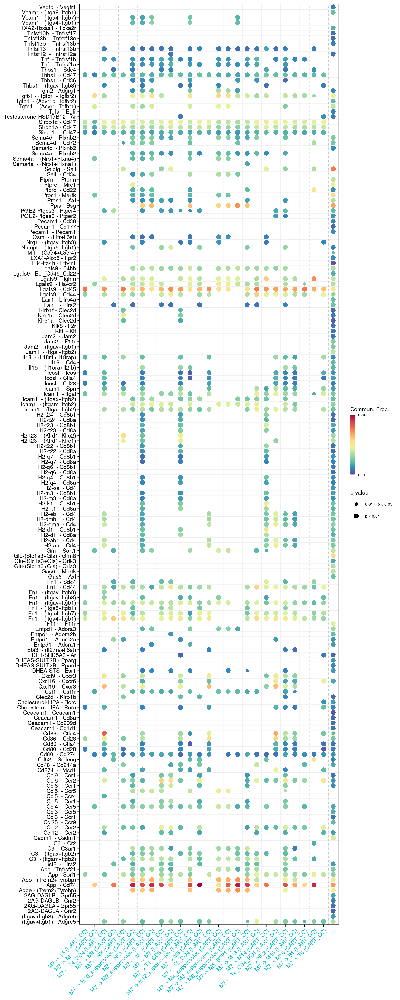
# Heatmap based on a single object
par(mfrow = c(1,2), xpd=TRUE)
ht <- list()
for (i in 1:length(CC_objects_compare)) {
ht[[i]] <- netVisual_heatmap(CC_objects_compare[[i]],
signaling = pathways.show,
color.heatmap = "Reds",
#cluster.rows = T,
#cluster.cols = T,
title.name = paste(pathways.show, "signaling ",
names(CC_objects_compare)[i]))
}
ComplexHeatmap::draw(ht[[1]] + ht[[2]], ht_gap = unit(0.5, "cm"))
pathways.show <- c("ApoE")
par(mfrow = c(1,2), xpd=TRUE)
ht <- list()
for (i in 1:length(CC_objects_compare)) {
ht[[i]] <- netVisual_heatmap(CC_objects_compare[[i]],
signaling = pathways.show,
color.heatmap = "Reds",
#cluster.rows = T,
#cluster.cols = T,
title.name = paste(pathways.show, "signaling ", names(CC_objects_compare)[i]))
}
ComplexHeatmap::draw(ht[[1]] + ht[[2]], ht_gap = unit(0.5, "cm"))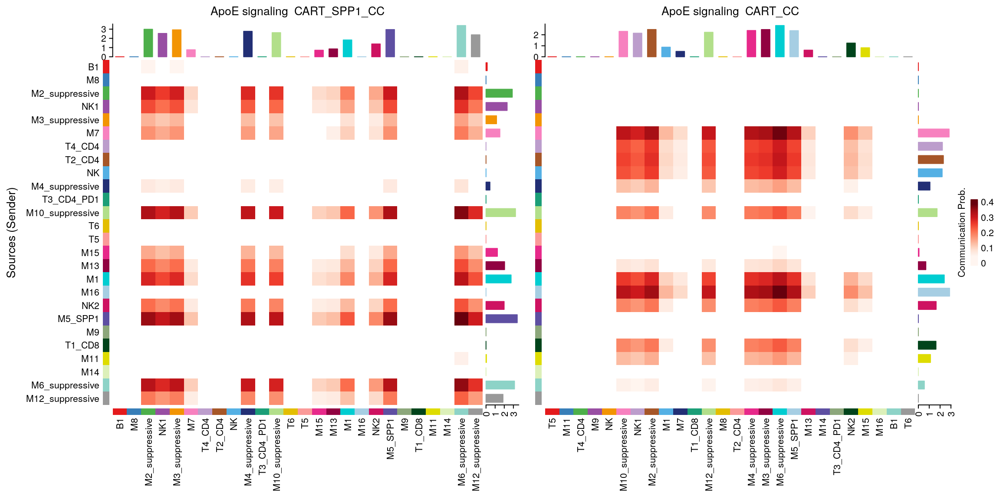
pathways.show <- c("SPP1")
par(mfrow = c(1,2), xpd=TRUE)
ht <- list()
for (i in 1:length(CC_objects_compare)) {
ht[[i]] <- netVisual_heatmap(object = CC_objects_compare[[i]],
signaling = pathways.show,
color.heatmap = "Reds",
#cluster.rows = T,
#cluster.cols = T,
title.name = paste(pathways.show, "signaling ", names(CC_objects_compare)[i]))
}
ComplexHeatmap::draw(ht[[1]] + ht[[2]], ht_gap = unit(0.5, "cm"))
| Version | Author | Date |
|---|---|---|
| 593cd45 | heinin | 2025-09-05 |
pathways.show <- c("MHC-I")
par(mfrow = c(1,2), xpd=TRUE)
ht <- list()
for (i in 1:length(CC_objects_compare)) {
ht[[i]] <- netVisual_heatmap(object = CC_objects_compare[[i]],
signaling = pathways.show,
color.heatmap = "Reds",
#cluster.rows = T,
#cluster.cols = T,
title.name = paste(pathways.show, "signaling ", names(CC_objects_compare)[i]))
}
ComplexHeatmap::draw(ht[[1]] + ht[[2]], ht_gap = unit(0.5, "cm"))
| Version | Author | Date |
|---|---|---|
| 593cd45 | heinin | 2025-09-05 |
pathways.show <- c("MHC-II")
par(mfrow = c(1,2), xpd=TRUE)
ht <- list()
for (i in 1:length(CC_objects_compare)) {
ht[[i]] <- netVisual_heatmap(object = CC_objects_compare[[i]],
signaling = pathways.show,
color.heatmap = "Reds",
#cluster.rows = T,
#cluster.cols = T,
title.name = paste(pathways.show, "signaling ", names(CC_objects_compare)[i]))
}
ComplexHeatmap::draw(ht[[1]] + ht[[2]], ht_gap = unit(0.5, "cm"))
| Version | Author | Date |
|---|---|---|
| 593cd45 | heinin | 2025-09-05 |
# Chord diagram
pathways.show <- c("MHC-I")
par(mfrow = c(1,2), xpd=TRUE)
for (i in 1:length(CC_objects_compare)) {
netVisual_aggregate(CC_objects_compare[[i]],
signaling = pathways.show,
layout = "chord",
signaling.name = paste(pathways.show, names(CC_objects_compare)[i]),
color.use = carspp1_celltype_col)
}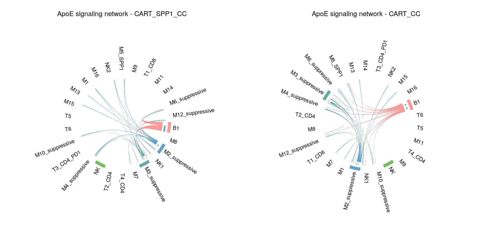
| Version | Author | Date |
|---|---|---|
| 593cd45 | heinin | 2025-09-05 |
pathways.show <- c("ApoE")
par(mfrow = c(1,2), xpd=TRUE)
for (i in 1:length(CC_objects_compare)) {
#group = group.cellType,
netVisual_chord_cell(CC_objects_compare[[i]],
signaling = pathways.show,
title.name = paste0(pathways.show, " signaling network - ", names(CC_objects_compare)[i]),
color.use = carspp1_celltype_col)
}
| Version | Author | Date |
|---|---|---|
| 593cd45 | heinin | 2025-09-05 |
par(mfrow = c(1, 2), xpd=TRUE)
# Compare the signaling gene expression distribution between different datasets
CC_merged_object@meta$Sample = factor(CC_merged_object@meta$Sample, levels = c("CART_SPP1", "CART")) # set factor level
plotGeneExpression(CC_merged_object,
signaling = "SPP1",
split.by = "Sample",
colors.ggplot = T)
| Version | Author | Date |
|---|---|---|
| 593cd45 | heinin | 2025-09-05 |
#color.use = c("red", "blue"))
DefaultAssay(seurat_object) <- "RNA"
seurat_object <- NormalizeData(seurat_object)
plot_features <- c("Spp1", "Cd44")
ccl_features <- rownames(seurat_object)[grep("Ccl", rownames(seurat_object))]
VlnPlot(seurat_object,
features = plot_features,
group.by = "annot",
split.by = "orig.ident",
pt.size = 0,
slot = "data",
ncol = 1) &
theme_bw() &
RotatedAxis() &
xlab("")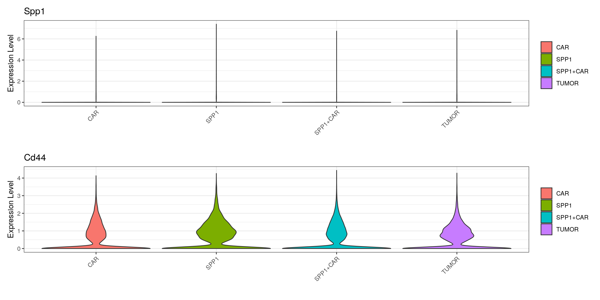
| Version | Author | Date |
|---|---|---|
| 593cd45 | heinin | 2025-09-05 |
VlnPlot(seurat_object,
features = plot_features,
group.by = "orig.ident",
pt.size = 0,
slot = "data",
ncol = 1) &
theme_bw() &
RotatedAxis() &
xlab("")
| Version | Author | Date |
|---|---|---|
| 593cd45 | heinin | 2025-09-05 |
VlnPlot(seurat_object,
features = plot_features,
group.by = "annot",
split.by = "orig.ident",
pt.size = 0,
slot = "data",
ncol = 1,
cols = c("aquamarine3", "deeppink3")) &
theme_bw() &
xlab("") &
ylab("Log-normalized expression")
| Version | Author | Date |
|---|---|---|
| 593cd45 | heinin | 2025-09-05 |
#NoLegend()M7 vs. others
# Compare all the interactions sending from M7 to L3 cells
#par(mfrow = c(1, 2), xpd = TRUE)
#netVisual_chord_gene(CC_objects_compare[["ADJ_CC"]], sources.use = c(18), targets.use = c(20), lab.cex = 0.5, title.name = paste0("Signaling from M7 - ADJ"))
#CC_merged_object$sources
levels(CC_merged_object@idents[[2]]) [1] "T5" "M11" "T4_CD4" "M9"
[5] "NK" "M10_suppressive" "NK1" "M2_suppressive"
[9] "M1" "M7" "T1_CD8" "M12_suppressive"
[13] "M8" "T2_CD4" "M4_suppressive" "M3_suppressive"
[17] "M6_suppressive" "M5_SPP1" "M13" "M14"
[21] "T3_CD4_PD1" "NK2" "M15" "M16"
[25] "B1" "T6" netVisual_bubble(CC_merged_object, sources.use = 10,
#targets.use = setdiff(seq(1, 21), c(12)),
thresh = 0.05, comparison = c(1, 2), angle.x = 45)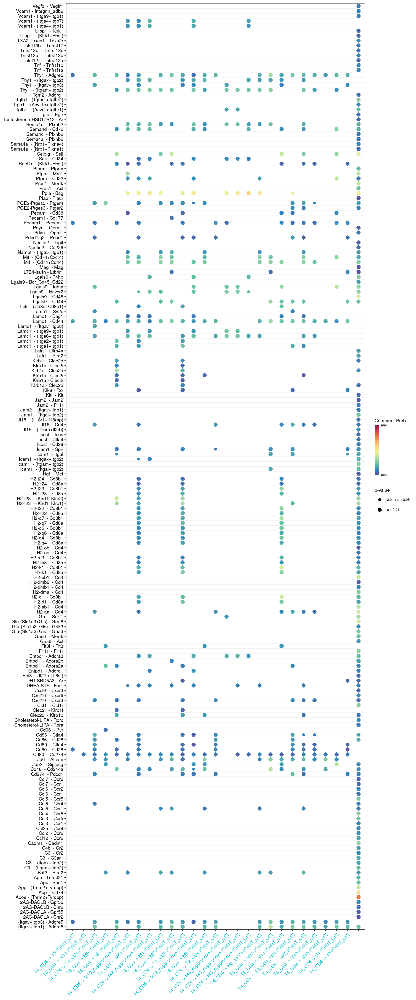
CD4 cells vs. others
levels(CC_merged_object@idents[[2]]) [1] "T5" "M11" "T4_CD4" "M9"
[5] "NK" "M10_suppressive" "NK1" "M2_suppressive"
[9] "M1" "M7" "T1_CD8" "M12_suppressive"
[13] "M8" "T2_CD4" "M4_suppressive" "M3_suppressive"
[17] "M6_suppressive" "M5_SPP1" "M13" "M14"
[21] "T3_CD4_PD1" "NK2" "M15" "M16"
[25] "B1" "T6" # Compare all the interactions sending from CD4
netVisual_bubble(CC_merged_object, sources.use = 3,
#targets.use = setdiff(seq(1, 21), c(16)),
thresh = 0.05, comparison = c(1, 2), angle.x = 45)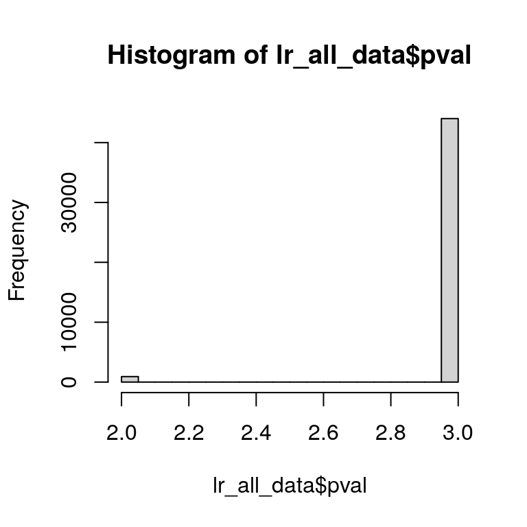
| Version | Author | Date |
|---|---|---|
| 593cd45 | heinin | 2025-09-05 |
netVisual_bubble(CC_merged_object, sources.use = 14,
#targets.use = setdiff(seq(1, 21), c(3)),
thresh = 0.05, comparison = c(1, 2), angle.x = 45)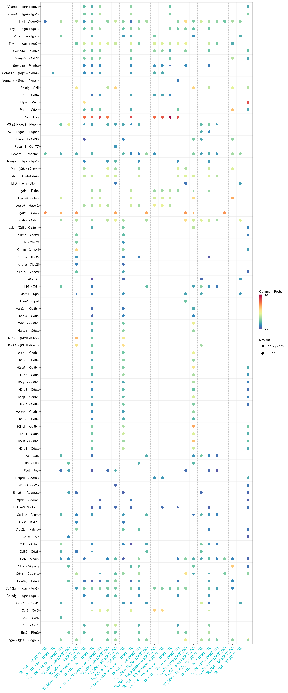
| Version | Author | Date |
|---|---|---|
| 593cd45 | heinin | 2025-09-05 |
netVisual_bubble(CC_merged_object, sources.use = 21,
#targets.use = setdiff(seq(1, 21), c(13)),
thresh = 0.05, comparison = c(1, 2), angle.x = 45)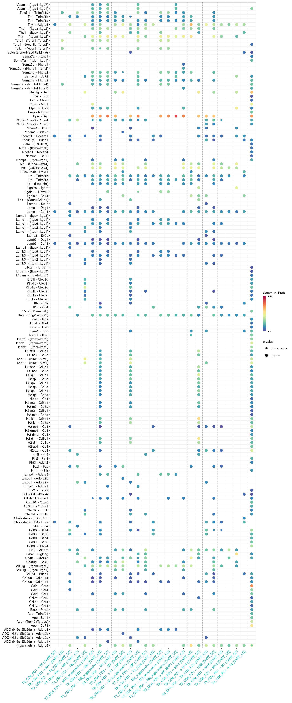
| Version | Author | Date |
|---|---|---|
| 593cd45 | heinin | 2025-09-05 |
Saving all significant pathways
# Using the netVisual_bubble function to pull all LR pair results
lr_all <- netVisual_bubble(CC_merged_object,
sources.use = NULL, targets.use = NULL,
comparison = c(1, 2), angle.x = 45)
lr_all_data <- ggplot_build(lr_all)
lr_all_data <- lr_all_data$plot$data
hist(lr_all_data$pval)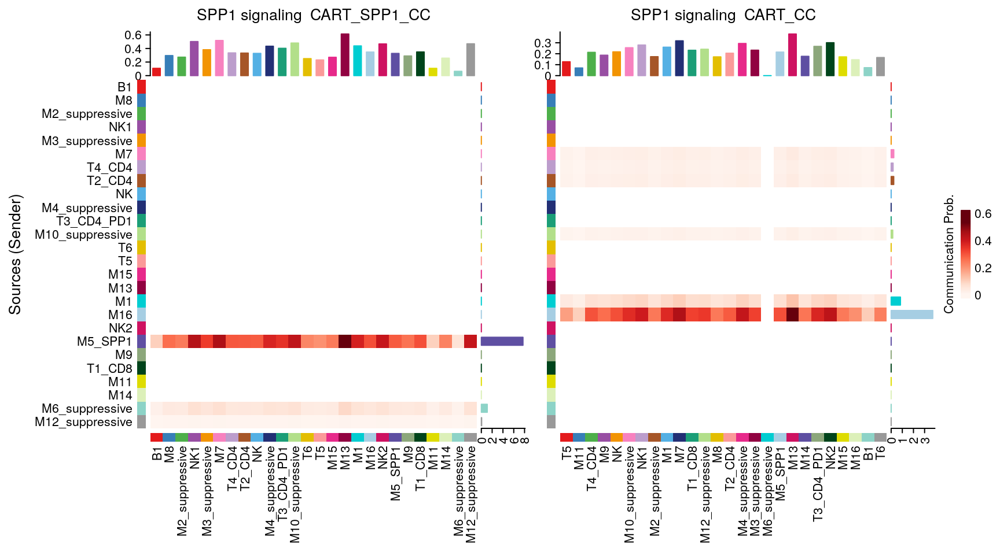
| Version | Author | Date |
|---|---|---|
| 593cd45 | heinin | 2025-09-05 |
write.table(lr_all_data, "/home/hnatri/SPP1_mouse_scRNAseq/CARSPP1_vs_CAR_CellChat_LR_all_res.tsv",
quote = F, sep = "\t", row.names = F)Selected pathways
pathways.show <- c("SPP1")
par(mfrow = c(1,2), xpd=TRUE)
ht <- list()
for (i in 1:length(CC_objects_compare)) {
ht[[i]] <- netVisual_heatmap(CC_objects_compare[[i]],
signaling = pathways.show,
color.heatmap = "Reds",
title.name = paste(pathways.show, "signaling ", names(CC_objects_compare)[i]))
}
ComplexHeatmap::draw(ht[[1]] + ht[[2]], ht_gap = unit(0.5, "cm"))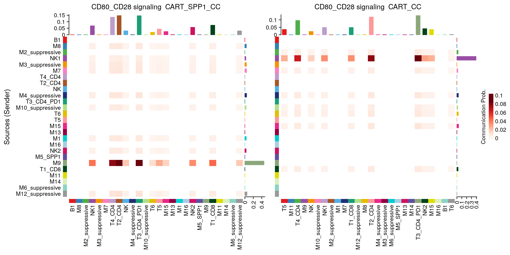
pathways.show <- c("MHC-II")
par(mfrow = c(1,2), xpd=TRUE)
ht <- list()
for (i in 1:length(CC_objects_compare)) {
ht[[i]] <- netVisual_heatmap(CC_objects_compare[[i]],
signaling = pathways.show,
color.heatmap = "Reds",
title.name = paste(pathways.show, "signaling ", names(CC_objects_compare)[i]))
}
ComplexHeatmap::draw(ht[[1]] + ht[[2]], ht_gap = unit(0.5, "cm"))
pathways.show <- c("MHC-I")
par(mfrow = c(1,2), xpd=TRUE)
ht <- list()
for (i in 1:length(CC_objects_compare)) {
CC_objects_compare[[i]]@meta$celltype <- factor(CC_objects_compare[[i]]@meta$celltype,
levels = celltypes)
CC_objects_compare[[i]]@idents <- factor(CC_objects_compare[[i]]@idents,
levels = celltypes)
ht[[i]] <- netVisual_heatmap(CC_objects_compare[[i]],
signaling = pathways.show,
color.heatmap = "Reds",
title.name = paste(pathways.show, "signaling ", names(CC_objects_compare)[i]))
}
ComplexHeatmap::draw(ht[[1]] + ht[[2]], ht_gap = unit(0.5, "cm"))
sessionInfo()R version 4.3.0 (2023-04-21)
Platform: x86_64-pc-linux-gnu (64-bit)
Running under: Ubuntu 22.04.3 LTS
Matrix products: default
BLAS: /usr/lib/x86_64-linux-gnu/openblas-pthread/libblas.so.3
LAPACK: /usr/lib/x86_64-linux-gnu/openblas-pthread/libopenblasp-r0.3.20.so; LAPACK version 3.10.0
locale:
[1] LC_CTYPE=en_US.UTF-8 LC_NUMERIC=C
[3] LC_TIME=en_US.UTF-8 LC_COLLATE=en_US.UTF-8
[5] LC_MONETARY=en_US.UTF-8 LC_MESSAGES=en_US.UTF-8
[7] LC_PAPER=en_US.UTF-8 LC_NAME=C
[9] LC_ADDRESS=C LC_TELEPHONE=C
[11] LC_MEASUREMENT=en_US.UTF-8 LC_IDENTIFICATION=C
time zone: Etc/UTC
tzcode source: system (glibc)
attached base packages:
[1] grid stats graphics grDevices utils datasets methods
[8] base
other attached packages:
[1] circlize_0.4.15 plyr_1.8.8 ComplexHeatmap_2.18.0
[4] viridis_0.6.3 viridisLite_0.4.2 RColorBrewer_1.1-3
[7] CellChat_2.1.1 bigmemory_4.6.1 Biobase_2.62.0
[10] BiocGenerics_0.48.1 igraph_1.4.3 googlesheets4_1.1.0
[13] workflowr_1.7.1 ggpubr_0.6.0 lubridate_1.9.2
[16] forcats_1.0.0 stringr_1.5.0 dplyr_1.1.2
[19] purrr_1.0.2 readr_2.1.4 tidyr_1.3.0
[22] tibble_3.2.1 ggplot2_3.4.2 tidyverse_2.0.0
[25] SeuratDisk_0.0.0.9021 Seurat_5.0.1 SeuratObject_5.0.2
[28] sp_1.6-1
loaded via a namespace (and not attached):
[1] fs_1.6.2 matrixStats_1.0.0 spatstat.sparse_3.0-1
[4] httr_1.4.6 doParallel_1.0.17 tools_4.3.0
[7] sctransform_0.4.1 backports_1.4.1 utf8_1.2.3
[10] R6_2.5.1 lazyeval_0.2.2 uwot_0.1.14
[13] GetoptLong_1.0.5 withr_2.5.0 gridExtra_2.3
[16] progressr_0.13.0 cli_3.6.1 Cairo_1.6-0
[19] spatstat.explore_3.2-1 fastDummies_1.7.3 network_1.18.1
[22] labeling_0.4.2 sass_0.4.6 spatstat.data_3.0-1
[25] ggridges_0.5.4 pbapply_1.7-0 systemfonts_1.0.4
[28] svglite_2.1.1 parallelly_1.36.0 rstudioapi_0.14
[31] FNN_1.1.3.2 generics_0.1.3 shape_1.4.6
[34] ica_1.0-3 spatstat.random_3.1-5 car_3.1-2
[37] Matrix_1.6-5 ggbeeswarm_0.7.2 fansi_1.0.4
[40] S4Vectors_0.40.2 abind_1.4-5 lifecycle_1.0.3
[43] whisker_0.4.1 yaml_2.3.7 carData_3.0-5
[46] Rtsne_0.16 promises_1.2.0.1 crayon_1.5.2
[49] miniUI_0.1.1.1 lattice_0.21-8 cowplot_1.1.1
[52] magick_2.7.4 sna_2.7-1 pillar_1.9.0
[55] knitr_1.43 rjson_0.2.21 future.apply_1.11.0
[58] codetools_0.2-19 leiden_0.4.3 glue_1.6.2
[61] getPass_0.2-4 data.table_1.14.8 vctrs_0.6.5
[64] png_0.1-8 spam_2.9-1 cellranger_1.1.0
[67] gtable_0.3.3 cachem_1.0.8 xfun_0.39
[70] mime_0.12 coda_0.19-4 survival_3.5-5
[73] gargle_1.4.0 iterators_1.0.14 ellipsis_0.3.2
[76] fitdistrplus_1.1-11 ROCR_1.0-11 nlme_3.1-162
[79] bit64_4.0.5 RcppAnnoy_0.0.20 rprojroot_2.0.3
[82] bslib_0.4.2 irlba_2.3.5.1 vipor_0.4.5
[85] KernSmooth_2.23-21 colorspace_2.1-0 ggrastr_1.0.2
[88] tidyselect_1.2.0 processx_3.8.1 bit_4.0.5
[91] compiler_4.3.0 curl_5.0.1 git2r_0.32.0
[94] BiocNeighbors_1.20.2 hdf5r_1.3.8 plotly_4.10.2
[97] scales_1.2.1 lmtest_0.9-40 callr_3.7.3
[100] NMF_0.26 digest_0.6.31 goftest_1.2-3
[103] spatstat.utils_3.0-3 presto_1.0.0 rmarkdown_2.22
[106] htmltools_0.5.5 pkgconfig_2.0.3 highr_0.10
[109] fastmap_1.1.1 rlang_1.1.1 GlobalOptions_0.1.2
[112] htmlwidgets_1.6.2 shiny_1.7.4 farver_2.1.1
[115] jquerylib_0.1.4 zoo_1.8-12 jsonlite_1.8.5
[118] BiocParallel_1.36.0 statnet.common_4.9.0 magrittr_2.0.3
[121] ggnetwork_0.5.12 dotCall64_1.0-2 patchwork_1.1.2
[124] munsell_0.5.0 Rcpp_1.0.10 reticulate_1.29
[127] stringi_1.7.12 ggalluvial_0.12.5 MASS_7.3-60
[130] parallel_4.3.0 listenv_0.9.0 ggrepel_0.9.3
[133] bigmemory.sri_0.1.6 deldir_1.0-9 splines_4.3.0
[136] tensor_1.5 hms_1.1.3 ps_1.7.5
[139] uuid_1.1-0 spatstat.geom_3.2-1 ggsignif_0.6.4
[142] RcppHNSW_0.5.0 rngtools_1.5.2 reshape2_1.4.4
[145] stats4_4.3.0 evaluate_0.21 BiocManager_1.30.20
[148] tzdb_0.4.0 foreach_1.5.2 httpuv_1.6.11
[151] RANN_2.6.1 polyclip_1.10-4 future_1.32.0
[154] clue_0.3-64 scattermore_1.2 gridBase_0.4-7
[157] broom_1.0.4 xtable_1.8-4 RSpectra_0.16-1
[160] rstatix_0.7.2 later_1.3.1 googledrive_2.1.0
[163] beeswarm_0.4.0 registry_0.5-1 IRanges_2.36.0
[166] cluster_2.1.4 timechange_0.2.0 globals_0.16.2